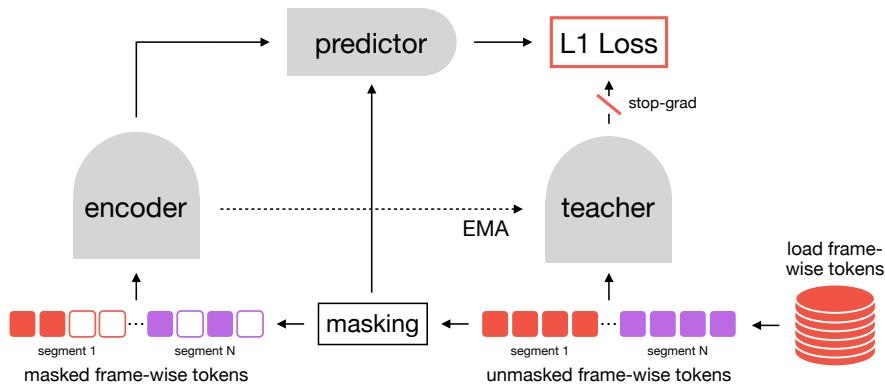

arXiv 新增 · video JEPA / long-duration representation · P0 · 2026-06-24
P-JEPA：JEPA/latent predictive learning 是通用视觉 SSL 的核心路线之一；这篇把目标推进到长时程视频和过程结构，是今天最值得先读的论文
处理 procedural videos 中远距离依赖和视觉相似动作的歧义，例如同一物体状态的 on/off 等动作在局部视觉上相似但流程位置不同。
P-JEPA: Procedural Video Representation Learning via Joint Embedding Predictive Architecture Felix Tristram, Stefano Gasperini, Benjamin Killeen, Marcel Walch, Christian Benz, Nassir Navab, Ghazal Ghazaei；arXiv 页面未列稳定机构。 arXiv 新增 · video JEPA / long-duration representation 原文链接
编号 2606.23256优先级 P0类别 arXiv 新增 · video JEPA / long-duration representation会议 arXiv 新增 · video JEPA / long-duration representation方法 把 procedural video 的长时程动作建模压缩到 dense、frame-aligned action space，再对 pooled masked action representations 做 JEPA 式预测；方法声称 backbone-agnostic，面向长视频而不是短 clip。来源 arXiv / OpenReview
先说结论。JEPA/latent predictive learning 是通用视觉 SSL 的核心路线之一；这篇把目标推进到长时程视频和过程结构，是今天最值得先读的论文。 处理 procedural videos 中远距离依赖和视觉相似动作的歧义，例如同一物体状态的 on/off 等动作在局部视觉上相似但流程位置不同。
Figureure 8 · : Overview of Pooling frameworks. Figure 8: Overview of Pooling frameworks. 这张图概括 P-JEPA 的整体方法流程。阅读时先看模块之间传递的训练信号，再看作者如何把目标拆成可优化的子问题。 
Figureure 1 · : P-JEPA Figure 1: P-JEPA. A take-level JEPA is trained on continuous streams of feature tokens. The student encoder sees randomly selected context tokens, the predictor fills masked target positions, and an EMA teacher provides latent targets for the complete valid stream. 这张图来自论文 PDF 的结构化抽取。当前用于辅助理解 P-JEPA 的方法或实验，请结合正文精读段落一起看。 核心问题
JEPA/latent predictive learning 是通用视觉 SSL 的核心路线之一；这篇把目标推进到长时程视频和过程结构，是今天最值得先读的论文。
方法拆解
把 procedural video 的长时程动作建模压缩到 dense、frame-aligned action space，再对 pooled masked action representations 做 JEPA 式预测；方法声称 backbone-agnostic，面向长视频而不是短 clip。
主要贡献
处理 procedural videos 中远距离依赖和视觉相似动作的歧义，例如同一物体状态的 on/off 等动作在局部视觉上相似但流程位置不同。
实验看点
摘要强调该类 video foundation representations 可支撑 activity understanding、spatiotemporal localization 和 predictive control；需要重点看它是否在长视频下优于普通 masked video modeling 或 short-window V-JEPA 类训练。
局限与读法
应用语境偏 embodied assistance/procedural tasks，未必直接等价于 web video 通用预训练；真正价值取决于 action-space 设计是否需要任务先验。